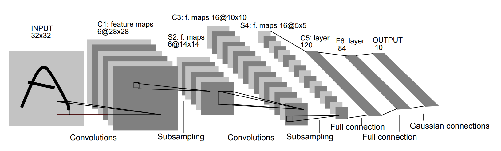

Part 4: Convolutional Neural Networks [Draft]
"What we observe is not nature itself, but nature exposed to our method of questioning." -- Werner Heisenberg
Introduction
We have built enough classifier to discriminate 2-dimensional points. Let's try to discriminate higher dimensional points. More specifically, let's try to discriminate 28x28 gray-scale images:

These are 28x28 gray-scale images each represents a handwritten digit. It is called The MMNIST Dataset. Here is the Wikipedia entry. The original dataset contains 60,000 train examples, 10,000 test examples. It is fair to say this is one of the most famous Machine Learning dataset of all time.
We can build a simple Deep Neural Network to discriminate these images, however, we are going to learn a new technique, called Convolutional Neural Networks (CNN) in this tutorial. CNNs are being used very commonly in the literature for a variety of problems, and they are initially being used for images with a big success.
Let's do some imports first, to get ready.
import collections
import numpy as np
import matplotlib.pyplot as plt
import PIL
import tensorflow as tf
Edge detection using kernels (filters)
Historically, in image processing, people have used various filters for various tasks. For example, some of the known filters are:
Here is the 3x3 Sobel operator:
$$ S_x = \begin{bmatrix} -1 & 0 & +1 \\ -2 & 0 & +2 \\ -1 & 0 & +1 \\ \end{bmatrix}, \quad S_y = \begin{bmatrix} -1 & -2 & -1 \\ 0 & 0 & 0 \\ +1 & +2 & +1 \\ \end{bmatrix} $$and, for the sake of completeness, we can combine both using:
$$ \sqrt{ \text{Conv}(S_x, A) ^2 + \text{Conv}(S_y, A)^2 } $$Let's play with the Sobel operator on the following image:

im = PIL.Image.open('static_images/valve_original.png')
pix = im.load()
num_array = np.zeros((im.size[0], im.size[1], 3))
for i in range(im.size[0]):
for j in range(im.size[1]):
average = sum(pix[i,j])/3
num_array[i,j] = (average, average, average)
kernel1 = np.array([[-1, -2, -1],
[0, 0, 0],
[1, 2, 1]])
kernel2 = np.array([[-1, 0, 1],
[-2, 0, 2],
[-1, 0, 1]])
for i in range(1, im.size[0]-1):
for j in range(1, im.size[1]-1):
value1 = sum(sum(num_array[i-1:i+2, j-1:j+2, 0] * kernel1))
value2 = sum(sum(num_array[i-1:i+2, j-1:j+2, 0] * kernel2))
threshold = 60
value = max(int((value1 ** 2 + value2 ** 2) ** 0.5), threshold)
if value == threshold:
value = 0
pix[i,j] = (value, value, value)
im.save('image.png')

Convolution operations in two dimensions
Let's discuss the convolution operation in 2-dimensions. It is basically moving a kernel on an the image and recording values on the corresponding pixels.
Convolutional animations are taken from:
- [1] Vincent Dumoulin, Francesco Visin - A guide to convolution arithmetic for deep learning.
Blue maps are inputs, and cyan maps are outputs.
 |
 |
 |
 |
| No padding, no strides | Arbitrary padding, no strides | Half padding, no strides | Full padding, no strides |
 |
 |
 |
|
| No padding, strides | Padding, strides | Padding, strides (odd) |
Some terminology:
- Padding: Padding of the image generally with 0's. Notice that if there is no padding, then, the output size is smaller than the original image size.
- Stride: Amount of shift after each single convolution operation.
Let's go over more examples for (1) Convolution operation and (2) Max pooling over this technical document.
Why CNNs work?
Some simple ideas why CNNs work:
- Weight sharing (less parameters), feature locality
- Translation invariance
- Learning hiererchical features in different layers (simpler to complex)
Let's build a simple Deep Neural Network first
mnist = tf.keras.datasets.mnist
(x_train, y_train),(x_test, y_test) = mnist.load_data()
x_train, x_test = x_train / 255.0, x_test / 255.0
print('x_train.shape: %s' % str(x_train.shape))
print('y_train.shape: %s' % str(y_train.shape))
print('x_test.shape: %s' % str(x_test.shape))
print('y_test.shape: %s' % str(y_test.shape))
model = tf.keras.models.Sequential([
tf.keras.layers.Flatten(input_shape=(28, 28)),
tf.keras.layers.Dense(512, activation=tf.nn.relu),
tf.keras.layers.Dropout(0.2),
tf.keras.layers.Dense(10, activation=tf.nn.softmax)
])
model.compile(optimizer='adam',
loss='sparse_categorical_crossentropy',
metrics=['accuracy'])
model.fit(x_train, y_train, epochs=1, verbose=0)
print(model.metrics_names)
print(model.evaluate(x_train, y_train, verbose=2))
print(model.evaluate(x_test, y_test, verbose=2))
x_train.shape: (60000, 28, 28) y_train.shape: (60000,) x_test.shape: (10000, 28, 28) y_test.shape: (10000,) ['loss', 'acc'] [0.09437241498865187, 0.97215] [0.10864689696636051, 0.9669]
Neural Network structure inspired by Le-net 5
Original Le-net 5 architecture is here (taken from the paper):
We are not going to build the exact same network with Le-net5, however it is inspired by Le-net5 heavily.
mnist = tf.keras.datasets.mnist
(x_train, y_train),(x_test, y_test) = mnist.load_data()
x_train, x_test = x_train / 255.0, x_test / 255.0
img_rows, img_cols = 28, 28
x_train = x_train.reshape(x_train.shape[0], img_rows, img_cols, 1)
x_test = x_test.reshape(x_test.shape[0], img_rows, img_cols, 1)
input_shape = (img_rows, img_cols, 1)
model = tf.keras.models.Sequential([
# 28x28x1
tf.keras.layers.Convolution2D(filters=6, kernel_size=(5,5), activation = 'relu', input_shape=input_shape),
# 24x24x6
tf.keras.layers.MaxPooling2D(pool_size=(2, 2)),
# 12x12x6
tf.keras.layers.Convolution2D(filters=16, kernel_size=(5,5), activation = 'relu'),
# 8x8x16
tf.keras.layers.MaxPooling2D(pool_size=(2, 2)),
# 4x4x16
tf.keras.layers.Flatten(),
tf.keras.layers.Dense(128, activation = 'relu'),
tf.keras.layers.Dropout(0.2),
tf.keras.layers.Dense(84, activation = 'relu'),
tf.keras.layers.Dense(10, activation=tf.nn.softmax)])
model.compile(optimizer='adam',
loss='sparse_categorical_crossentropy',
metrics=['accuracy'])
model.fit(x_train, y_train, epochs=1, verbose=0)
print(model.metrics_names)
print(model.evaluate(x_train, y_train, verbose=2))
print(model.evaluate(x_test, y_test, verbose=2))
['loss', 'acc'] [0.07444516042368486, 0.9768333333333333] [0.06581769113363699, 0.9783]
A little bit history and links
Here I want to link couple interesting papers. Not all of these papers are necessarily exclusively about CNNs.
The first couple papers I want to link is about backpropagation. Apparently, the history of backpropagation goes really back, as early as 1840s. However, I find these couple papers interesting in the context of Neural Networks:
- Many preivous papers about backprop...
- A Learning Scheme For Assymetric Threshold Network, Yann Le Cun 1985 (in French)
- Learning Process in Asymmetric Threshold Network, Yann Le Cun 1986
- Learning representations by back-propagation errors, Geoffrey Hinton, 1986
- A Theoretical Framework for Back-Propagation, Yann Le Cun, 1988
Couple papers on CNNs:
- Backpropagation Applied to Handwritten Zip Code Recognition, Yann Le Cun 1989 (Weight sharing idea)
- Handwritten Digit Recognition with a Back-Propagation Network, Yann Le Cun 1990
- Convolutional Network Demo from 1993 (implemented by paper above)
- Gradient-Based Learning Applied to Document Recognition, Yann Le Cun, 1998
- Le-net5 image search
- ImageNet Classification with Deep Convolutional Neural Networks (Imagenet record beating paper 2012 aka AlexNet)
- AlexNet Wikipedia
- AlexNet image search
Fairly new review paper on Deep Learning:
Kaggle competition on MNIST digits:
Last notes
Some last notes:
- Chopping off the last layer and re-training for other tasks
- Using embeddings vs using raw pixels. Visualizing and understanding
- Karpathy's work regarding tagging pictures. here
- Visualizing and understanding Convolutional Networks
- Going deeper with convolutions
Some known Network Architectures
Here are some famouse network architectures, would be useful to take a look:
- LeNet
- AlexNet
- VGGNet
- ResNet
References
- https://arxiv.org/pdf/1603.07285.pdf
- http://cs231n.github.io/convolutional-networks/
- Deep Learning for Computer Vision (Andrej Karpathy, OpenAI)
- https://github.com/TaavishThaman/LeNet-5-with-Keras